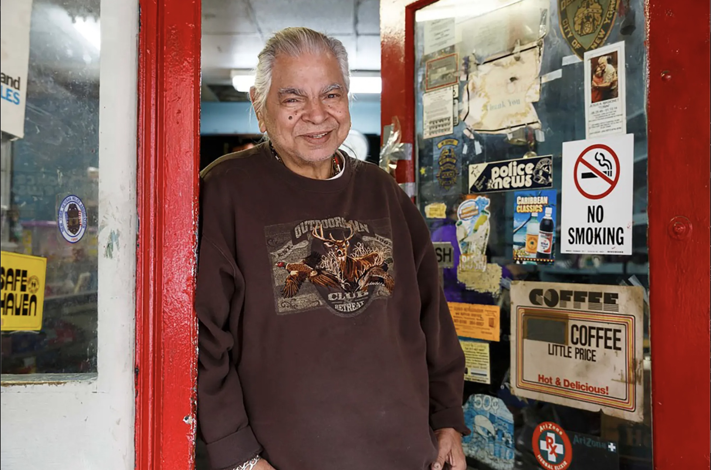
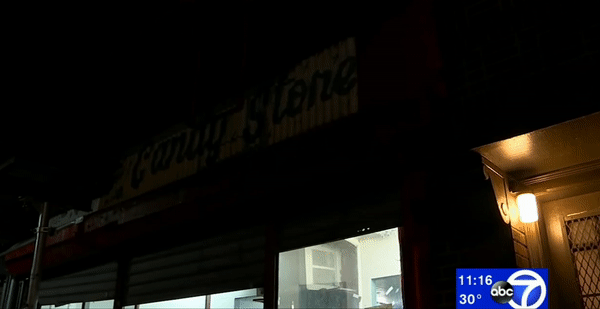
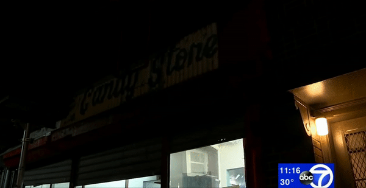

1974-2019
RAUL CANDY STORE
205 AVE B
NEW YORK, NY

JAMES AND KARLA MURRAY/ STORE FRONT: THE DISAPPEARING FACE OF NEW YORK
RAUL CANDY STORE LOCATED IN ALPHABET CITY WAS IN BUSINESS SINCE 1979.
The area east of First Avenue between Houston and 14th Street is called Alphabet City because the lettered avenues are named Avenue A, B, C, and D. Until about 1998, this section of the East Village resisted gentrification.

JAMES AND KARLA MURRAY/ STORE FRONT: THE DISAPPEARING FACE OF NEW YORK
RAUL SANTIAGO, 2019
“I opened this candy store in 1979 when this neighborhood was really in trouble. Although things have changed for the better, I still care about the children who live around here and I've al- ways tried to keep the neighborhood kids away from drugs. ”

GARY HE/EATER.COM
WHEN SANTIAGO FIRST OPENED HIS STORE, HE CHARGED A PENNY FOR EACH INDIVIDUAL CANDY.
Their storefront on Avenue B is Raul’s Candy Store’s third location in the area, and they have spent the last 20 years or so doling out gummy eggs and airheads to happy customers. But more than just a candy shop, Raul’s Candy Store was like a second home to many.
RAUL SANTIAGO, 2019
“I wish it wasn’t closing. I’m going to miss the store, I’m going to miss hanging out here like the family we are," said Jennifer Rosado, a resident of Alphabet City who has been shopping at the candy shop since she was a child. 'It’s going to be sad.''

GARY HE/EATER.COM
WILLY GUZMAN, 56, SAID HE HAS PATRONIZED THE STORE FOR MORE THAN 20 YEARS, AND USED TO HANG OUT THERE AFTER WORK AND ON WEEKENDS. GUZMAN SAID THE REGULARS WOULD TAKE TURNS PREPARING MEALS - IT WAS HIS TURN LAST WEEK, HE MADE LASAGNA - AND EVEN SPEND HOLIDAYS AT THE SHOP.
"We used to come and play dominoes over there," said the Alphabet City resident. "Everybody’s sad … It’s going to be strange for everybody."

 
